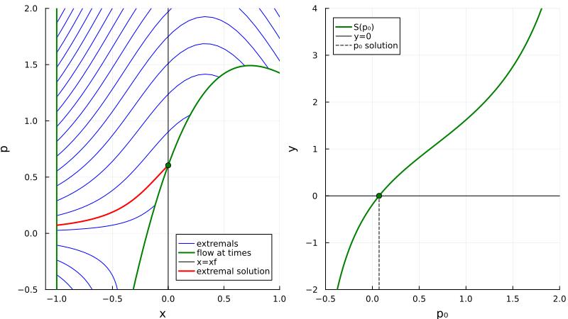

Indirect simple shooting
In this tutorial we present the indirect simple shooting method on a simple example.
Let us start by importing the necessary packages.
using OptimalControl # to define the optimal control problem and its flow
using OrdinaryDiffEq # to get the Flow function from OptimalControl
using NonlinearSolve # interface to NLE solvers
using MINPACK # NLE solver: use to solve the shooting equation
using Plots # to plot the solutionOptimal control problem
Let us consider the following optimal control problem:
\[\left\{ \begin{array}{l} \min \displaystyle \frac{1}{2} \int_{t_0}^{t_f} u^2(t) \, \mathrm{d} t\\[1.0em] \dot{x}(t) = \displaystyle -x(t)+\alpha x^2(t)+u(t), \quad u(t) \in \R, \quad t \in [t_0, t_f] \text{ a.e.}, \\[0.5em] x(t_0) = x_0, \quad x(t_f) = x_f, \end{array} \right.%\]
with $t_0 = 0$, $t_f = 1$, $x_0 = -1$, $x_f = 0$, $\alpha=1.5$ and $\forall\, t \in [t_0, t_f]$, $x(t) \in \R$.
t0 = 0
tf = 1
x0 = -1
xf = 0
α = 1.5
@def ocp begin
t ∈ [ t0, tf ], time
x ∈ R, state
u ∈ R, control
x(t0) == x0
x(tf) == xf
ẋ(t) == -x(t) + α * x(t)^2 + u(t)
∫( 0.5u(t)^2 ) → min
end;Boundary value problem
The pseudo-Hamiltonian of this problem is
\[ H(x,p,u) = p \, (-x+\alpha x^2+u) + p^0 u^2 /2,\]
where $p^0 = -1$ since we are in the normal case. From the Pontryagin Maximum Principle, the maximising control is given by
\[u(x, p) = p\]
since $\partial^2_{uu} H = p^0 = - 1 < 0$. Plugging this control in feedback form into the pseudo-Hamiltonian, and considering the limit conditions, we obtain the following two-points boundary value problem (BVP).
\[ \left\{ \begin{array}{l} \dot{x}(t) = \phantom{-} \nabla_p H[t] = -x(t) + \alpha x^2(t) + u(x(t), p(t)) = -x(t) + \alpha x^2(t) + p(t), \\[0.5em] \dot{p}(t) = - \nabla_x H[t] = (1 - 2 \alpha x(t))\, p(t), \\[0.5em] x(t_0) = x_0, \quad x(t_f) = x_f, \end{array} \right.\]
where $[t]~= (x(t),p(t),u(x(t), p(t)))$.
Our goal is to solve this (BVP). Solving (BVP) consists in solving the Pontryagin Maximum Principle which provides necessary conditions of optimality.
Shooting function
To achive our goal, let us first introduce the pseudo-Hamiltonian vector field
\[ \vec{H}(z,u) = \left( \nabla_p H(z,u), -\nabla_x H(z,u) \right), \quad z = (x,p),\]
and then denote by $\varphi_{t_0, x_0, p_0}(\cdot)$ the solution of the following Cauchy problem
\[\dot{z}(t) = \vec{H}(z(t), u(z(t))), \quad z(t_0) = (x_0, p_0).\]
Our goal becomes to solve
\[\pi( \varphi_{t_0, x_0, p_0}(t_f) ) = x_f, \quad \pi(x, p) = x.\]
To compute $\varphi$ with the OptimalControl package, we define the flow of the associated Hamiltonian vector field by:
u(x, p) = p
φ = Flow(ocp, u)We define also the projection function on the state space.
π((x, p)) = xActually, $\varphi_{t_0, x_0, p_0}(\cdot)$ is also solution of
\[ \dot{z}(t) = \vec{\mathbf{H}}(z(t)), \quad z(t_0) = (x_0, p_0),\]
where $\mathbf{H}(z) = H(z, u(z))$ and $\vec{\mathbf{H}} = (\nabla_p \mathbf{H}, -\nabla_x \mathbf{H})$. This is what is actually computed by Flow.
Now, to solve the (BVP) we introduce the shooting function.
\[ \begin{array}{rlll} S \colon & \R & \longrightarrow & \R \\ & p_0 & \longmapsto & S(p_0) = \pi( \varphi_{t_0, x_0, p_0}(t_f) ) - x_f. \end{array}\]
S(p0) = π( φ(t0, x0, p0, tf) ) - xf # shooting functionResolution of the shooting equation
At the end, solving (BVP) is equivalent to solve $S(p_0) = 0$. This is what we call the indirect simple shooting method. We define an initial guess.
ξ = [ 0.0 ] # initial guessNonlinearSolve.jl
nle! = (s, ξ, λ) -> s[1] = S(ξ[1]) # auxiliary function
prob = NonlinearProblem(nle!, ξ) # NLE problem
indirect_sol = solve(prob, show_trace=Val(true)) # resolution of S(p0) = 0
p0_sol = indirect_sol.u[1] # costate solution
println("\ncostate: p0 = ", p0_sol)
println("shoot: |S(p0)| = ", abs(S(p0_sol)), "\n")
Algorithm: NewtonRaphson(
descent = NewtonDescent()
)
---- ------------- -----------
Iter f(u) inf-norm Step 2-norm
---- ------------- -----------
0 1.88832286e-01 4.94065646e-324
1 1.15443196e-02 6.73483111e-02
2 4.58908506e-05 4.66297911e-03
3 7.27830397e-10 1.86843173e-05
4 1.42478928e-16 2.96343285e-10
Final 1.42478928e-16
----------------------
costate: p0 = 0.07202997482188266
shoot: |S(p0)| = 1.4247892799241235e-16MINPACK.jl
Instead of the NonlinearSolve.jl package we can use the MINPACK.jl package to solve the shooting equation. To compute the Jacobian of the shooting function we use the DifferentiationInterface.jl package with ForwardDiff backend.
using DifferentiationInterface
import ForwardDiff
backend = AutoForwardDiff()We are now in position to compute the Jacobian of the shooting function and use the hybrj solver from MINPACK through the fsolve function, providing the Jacobian.
nle! = (s, ξ) -> s[1] = S(ξ[1]) # auxiliary function
jnle!(js, ξ) = jacobian!(nle!, js, backend, ξ) # Jacobian of the shooting function
indirect_sol = fsolve(nle!, jnle!, ξ, show_trace=true) # resolution of S(p0) = 0
# costate solution
p0_sol = indirect_sol.x[1]
println("\ncostate: p0 = ", p0_sol)
println("shoot: |S(p0)| = ", abs(S(p0_sol)), "\n")Iter f(x) inf-norm Step 2-norm Step time
------ -------------- -------------- --------------
1 1.888323e-01 0.000000e+00 0.004323
hybrj not supported. Replaced by hybrd even if it is not visible on the doc.
Iter f(x) inf-norm Step 2-norm Step time
------ -------------- -------------- --------------
1 1.888323e-01 0.000000e+00 0.000858
2 1.154432e-02 4.535795e-03 0.001383
3 7.276546e-04 1.923231e-05 0.000684
4 2.897546e-06 8.703529e-08 0.000690
5 7.286010e-10 1.391141e-12 0.000673
6 8.442267e-16 8.800524e-20 0.065903
costate: p0 = 0.07202997482188239
shoot: |S(p0)| = 8.442267072451028e-16Plot of the solution
The solution can be plot calling first the flow.
sol = φ( (t0, tf), x0, p0_sol )
plot(sol, size=(800, 600))In the indirect shooting method, the research of the optimal control is replaced by the computation of its associated extremal. This computation is equivalent to finding the initial covector solution to the shooting function.
